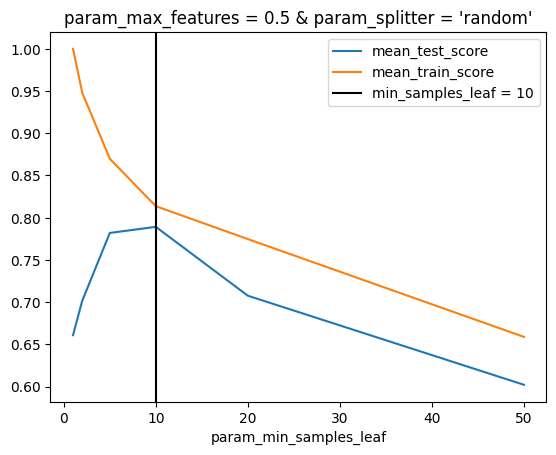
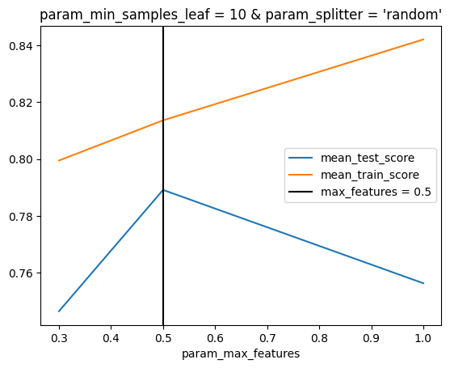
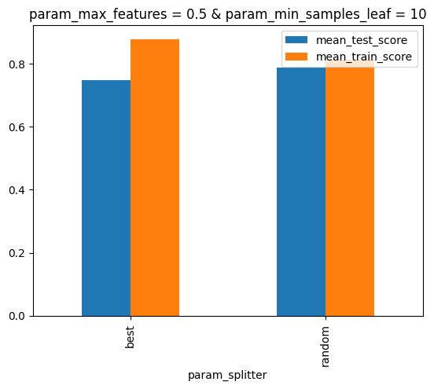

import sklearn.datasets
from model_inspector import get_inspector
from sklearn.model_selection import GridSearchCV, RandomizedSearchCV, KFold
from sklearn.tree import DecisionTreeRegressorSearchCV
Inspector functionality specific to estimators that inherit from
BaseSearchCV
X, y = sklearn.datasets.load_breast_cancer(return_X_y=True, as_frame=True)grid = GridSearchCV(
estimator=DecisionTreeRegressor(),
param_grid={
"min_samples_leaf": (1, 2, 5, 10, 20, 50),
"max_features": (0.3, 0.5, 1.0),
"splitter": ("best", "random"),
},
n_jobs=-1,
return_train_score=True,
cv=KFold(5, shuffle=True),
).fit(X, y)inspector = get_inspector(grid, X, y)_SearchCVInspector.plot_scores_vs_hparam
_SearchCVInspector.plot_scores_vs_hparam (hparam:Optional[str]=None, score_cols:Union[str,Sequence[s tr],NoneType]=None, ax=None)
Plot model scores against values of one hyperparameter
Parameters:
hparam: Name of the hyperparameter to plot against. Must be provided if there are multiple hyperparameters. Any other hyperparameters will be fixed at the value they have inself.model.best_params_.score_cols: Name of score columns to plot. By default will be the mean test and (if present) train score for the primary scoring metric.ax: MatplotlibAxesobject. Plot will be added to this object if provided; otherwise a newAxesobject will be generated.
ax = inspector.plot_scores_vs_hparam("min_samples_leaf")
ax = inspector.plot_scores_vs_hparam("max_features")
ax = inspector.plot_scores_vs_hparam("splitter")
_SearchCVInspector.show_score_vs_hparam_pair
_SearchCVInspector.show_score_vs_hparam_pair (hparams=None, score_col=None, cmap:str|Colormap='PuBu', low:float=0, high:float=0, axis:Axis|None=0, subset:Subset|None=None, te xt_color_threshold:float=0. 408, vmin:float|None=None, vmax:float|None=None, gmap:Sequence|None=None)
Show model scores against a pair of hyperparameters.
Background gradient uses axis=None by default, to facilitate identifying the best score across all combinations of hyperparameter values.
Parameters:
hparams: Name of the hyperparameters to plot against. The first two hyperparameters inself.model.param_gridwill be used by default. Any other hyperparameters will be fixed at the value they have inself.model.best_params_.score_col: Name of score column to plot. By default will be the mean test score for the primary scoring metric.
Remaining parameters are passed to pandas.io.formats.style.background_gradient.
inspector.show_score_vs_hparam_pair(["min_samples_leaf", "max_features"])| param_max_features | 0.300000 | 0.500000 | 1.000000 |
|---|---|---|---|
| param_min_samples_leaf | |||
| 1 | 0.702171 | 0.679882 | 0.696289 |
| 2 | 0.736160 | 0.722219 | 0.742642 |
| 5 | 0.788082 | 0.766575 | 0.779670 |
| 10 | 0.754099 | 0.768806 | 0.771306 |
| 20 | 0.723585 | 0.728852 | 0.746209 |
| 50 | 0.614502 | 0.671836 | 0.686244 |